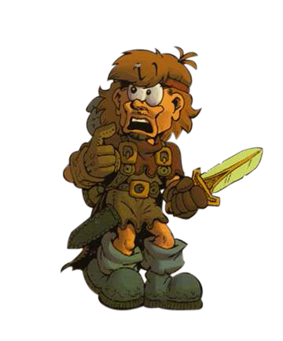

Jérôme BURGEAT
| Caractéristiques | Force | Perception | Endurance | Agilité | Chance |
|---|---|---|---|---|---|
| Niveau de maîtrise | 3 * | 3 * | 2 * | 2 * | 4 * |
| Pourcentage de réussite | 65 % | 60 % | 40 % | 33 % | 71 % |
10 ans à bourlinguer aux côtés de personnes talentueuses, le plus souvent en tant qu’auteur, scénariste ou chef de projet. Avec plus d’une dizaine d’éditeurs, sur plus d’une dizaine de gammes, qui continuent de m’émerveiller par leurs trouvailles. Chaque jour, de nouvelles rencontres, chaque jour, des projets – et beaucoup de café-mojitos. Vers 9 ans, je commence le jeu de rôle, en qualité de pièce rapportée auprès des amis de mon grand frère.